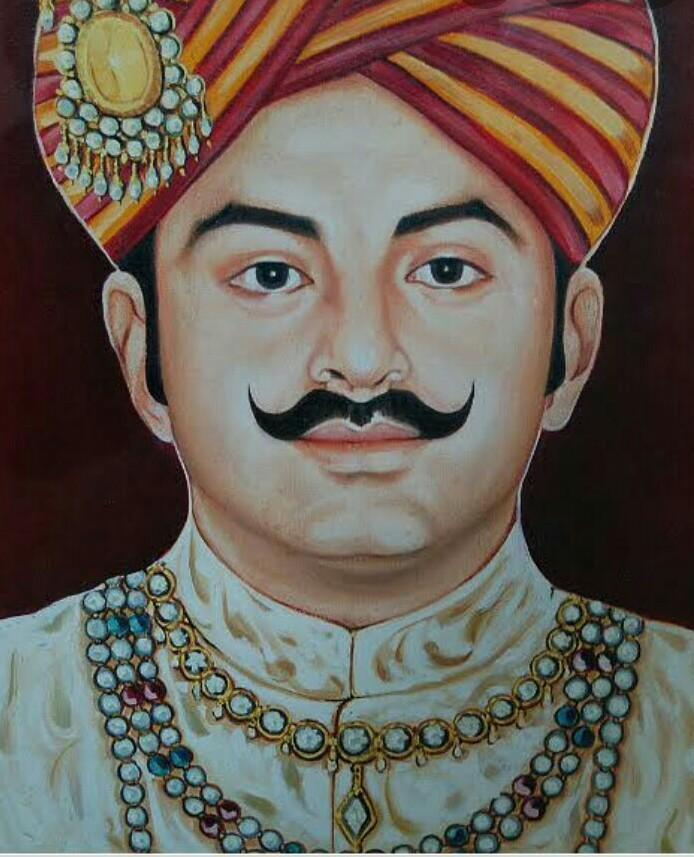

Kunwar Singh

Born: November 1777, Jagdishpur
Died: 26 April 1858, Jagdishpur
Full name: Babu Veer Kunwar Singh
Famously Known as Veer Kunwar Singh
Kunwar Singh was born in April 1777 to the Maharaja and Maharani of Jagdispur (now in
Bhojpur District, Bihar) to the Maharaja and Maharani of Jagdispur. His name is often lost amid
the other more renowned names of the Revolt. Nonetheless, his contribution to the First War of
Independence was enormous. Kunwar Singh led the uprising in Bihar. On July 25, 1857, he
gained command of the sepoys stationed at Danapur at the age of nearly 80. Kunwar Singh
took over Azamgarh in March 1858. (now in UP). He then went home and commanded a
successful fight near Jagdispur on July 23rd. The British, headed by Captain le Grand, were
beaten in this fight despite Kunwar Singh being the fact that Kunwar Singh was severely hurt.
Kunwar Singh was a leader during the Indian Rebellion of 1857. He belonged to a family of
the Ujjainiya clan of the Parmar Rajputs of Jagdispur, currently a part of Bhojpur district,
Bihar, India. At the age of 80, he led a selected band of armed soldiers against the troops under
the command of the British East India Company. He was the chief organiser of the fight against
the British in Bihar. He is popularly known as Veer Kunwar Singh.
Singh led the Indian Rebellion of 1857 in Bihar. He was nearly eighty and in failing health when he was
called upon to take up arms. He was assisted by both his brother, Babu Amar Singh and his commander-in-chief,
Hare Krishna Singh. Some argue that the latter was the real reason behind Kunwar Singh's initial military success.
He gave a good fight and harried British forces for nearly a year and remained invincible until the end.
He was an expert in the art of guerilla warfare. His tactics left the British puzzled.
To honour his contribution to India's freedom movement, the Republic of India issued a commemorative stamp
on 23 April 1966. The Government of Bihar established the Veer Kunwar Singh University, Arrah in 1992.
In 2017, the Veer Kunwar Singh Setu, also known as the Arrah-Chhapra Bridge, was inaugurated to connect
north and south Bihar. In 2018, to celebrate 160th anniversary of Kunwar Singh's death, the government
of Bihar relocated a statue of him to Hardinge Park. The park was also officially renamed as
'Veer Kunwar Singh Azadi Park'.